Komorebi Tea
木漏れ日 — sunlight filtering through leaves
A gongfu cha session by a garden window, late afternoon. Every design decision
is an act of care toward the visitor — hospitality (待客之道) expressed through
attention to detail. One question governs everything: does this serve the
tea and honour the guest, or does it distract from both?
Lighting
Same Table, Different Light
The same tea tray, cups, teapot, tools. The only thing that changes is the
light — and the light changes everything. The transition between them is not
a switch. It is the sun going down.
Daylight
Directional, dappled, with the shape of leaves in it
Warm amber-gold from the garden side, diagonal, with clear edges. One side glows. The opposite side is cooler, quieter.
Lamplight
The same warmth, concentrated
Smaller source, sharper falloff, tighter radius. The edges go genuinely dark. A subtle flicker gives the light life — it breathes.
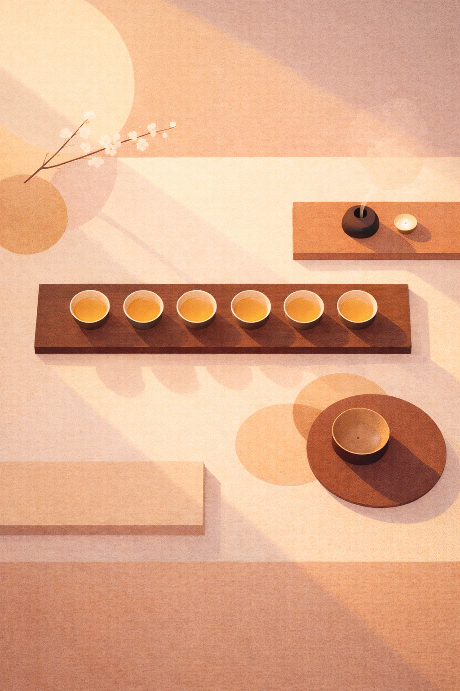
Garden Light — Stylized
Directional beams, not a soft gradient
Clear diagonal light rays with edges. Beams form parallelograms where they cross the surface. Objects cast directional shadows.
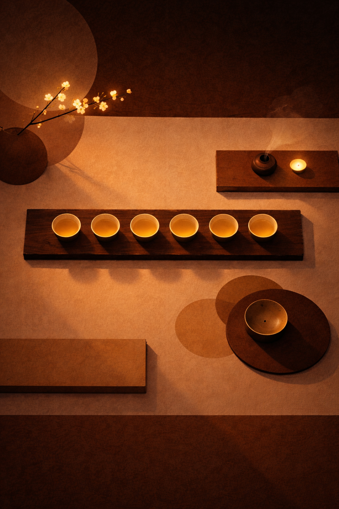
Evening — Stylized
Side lamp casting dramatic diagonal shadows
In lamplight the shadows lengthen and sharpen, stretching further across the surface. Tea cups glow amber — the brightest points in the scene.
Design principle
Light is the primary design material — the thing that establishes mood before anything else is perceived. Daylight enters from the garden side, diagonal, with clear edges. Lamplight is the same warmth concentrated from a smaller source. The transition between them is the sun going down — the palette shifts but the light fades slowly, the way a room settles from afternoon into evening.
Shadow
Earned by Light, Not Applied
Directional light creates directional shadows. Everything casts in the same
direction — consistent, never random. Shadows anchor things. They give depth
and weight without artifice.
Daylight Shadows
Soft, wide — beams form parallelograms
The light creates the geometry. Shadows fall in the same direction across every object on the surface.
Lamplight Shadows
Concentrated light, dark surface
In lamplight the darkness absorbs. Depth comes from the light — glows, highlights, bright edges — not from shadow.
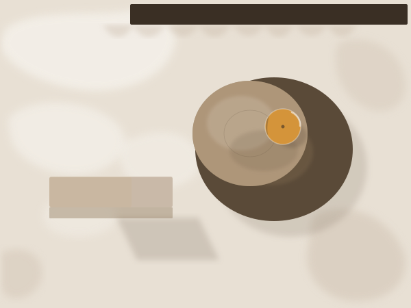
Palette Study
SVG using only the defined colour palette
Xuan paper surface, tea-amber beams, bronze/warm brown trays, warm stone box. Shadows via opacity blending.
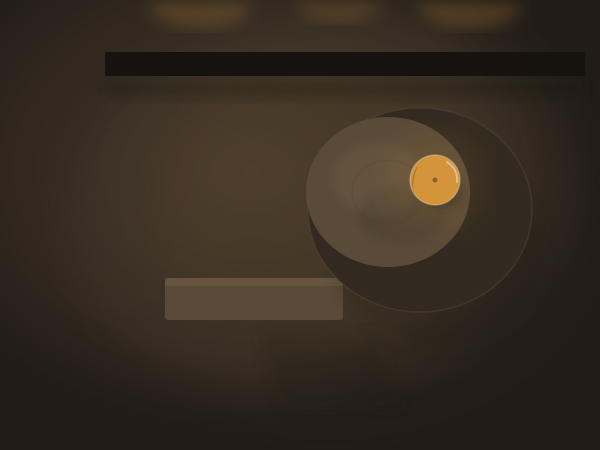
Palette Study
SVG using only the defined colour palette
Dark wood surface, lacquer accents, tea-amber cup glow. Mid-dark values achieved via opacity blending — possible palette gap.
Shadow is earned by light, not applied as decoration.
Material & Colour
The Palette Is the Table
Each colour is a surface from the tea session. Linen catches the light in two
values — bright and shadowed. Tea is the single saturated accent. Clay absorbs.
Wood grounds. The same materials under different light, not different materials.
Light Mode — Afternoon
麻
Light Linen
Catches the light. Cream, soft, unbleached.
#FEECD0
麻
Dark Linen
The same cloth, where the light doesn't reach.
#FDCB9C
茶
Tea
The single saturated colour — amber, bright, rare.
#F8B039
陶
Clay
Has memory. Unglazed, hand-shaped.
#D68A53
木
Wood
The ground. Everything rests on it.
#AD562F
花
Petal
White with a faint blush. The garden peeks in.
#FBF0EC
茎
Stem
Muted sage. The only colour outside warmth.
#6B8A5A
Dark Mode — Evening
麻
Light Linen
Cream shifts to gold by lamplight.
#CC7539
麻
Dark Linen
The cloth darkens where lamps don't reach.
#A44C18
茶
Tea
Hotter against the dark. The brightest thing left.
#FAA20C
陶
Clay
Absorbs what warmth remains.
#7C3307
木
Wood
Near-black. The darkness is the atmosphere.
#320E04
花
Petal
White turns warm gold under lamplight.
#D4B8A8
茎
Stem
Green recedes into the dark.
#3D5A2E
Shape
Two Families, Physical
Rectangles are structural — they ground, create regions, define edges.
Circles are focal — they sit within the rectangular structure and draw the eye.
Every shape has thickness. Thickness earns shadow. More presence, more depth.
Rectangles — thickness scales with importance
Circles — focal weight through depth
Composition — circles within rectangles, varying depth
主次分明 — more thickness, more presence, more shadow
Linen — soft thickness, folded cloth
Soft edges, diffused shadows, visible fold layers — cloth, not geometry
Cups — you pour content in
Exterior wall, rim, tea inside — the deeper the cup, the more content it holds.
Four shape families
Rectangles rise with hard edges — structural, they organise. Circles rise as focal points — they draw the eye. Linen rises with soft edges — cloth, not geometry, for content that breathes. Cups recess into the surface — they hold content you pour in. All have thickness. All cast or receive shadow. Depth scales with importance. In dark mode, shadow merges with the ground — depth reads through light catches and glow instead.
Space
留白 — Deliberately Kept
Space that has been deliberately kept, not space left over. Every element has
territory around it. Nothing crowds its neighbour. More room means more
breathing space, not more content.
Three elements. The space between them speaks as clearly as the objects themselves.
主次分明 — Clear primary and secondary
One element per section holds primary attention. Hierarchy comes from the content's own qualities — scale, weight, presence — not from containers drawn around it.
The Space
The Tea Room (茶室)
The room where gongfu cha happens. Natural materials. A garden visible through
the window — the garden is the light source.
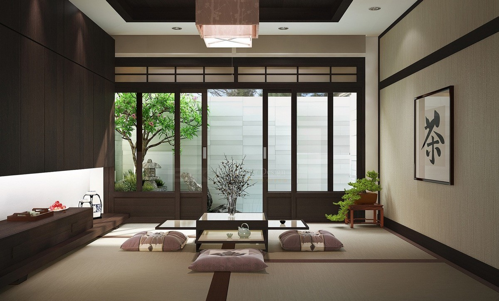
Both modes in one room
Garden light through sliding doors. Paper lantern overhead. Day and evening coexist in this space.
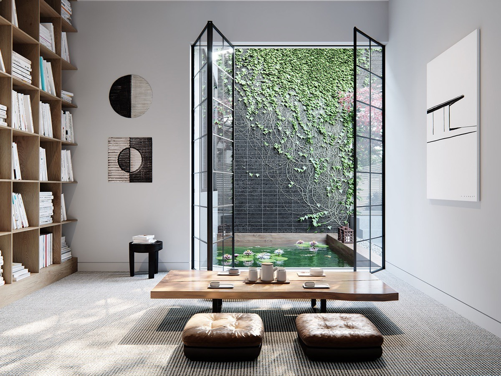
The garden IS the window
Floor-to-ceiling opening. Natural light floods in from green foliage. Cherry blossom at the edge of the frame.
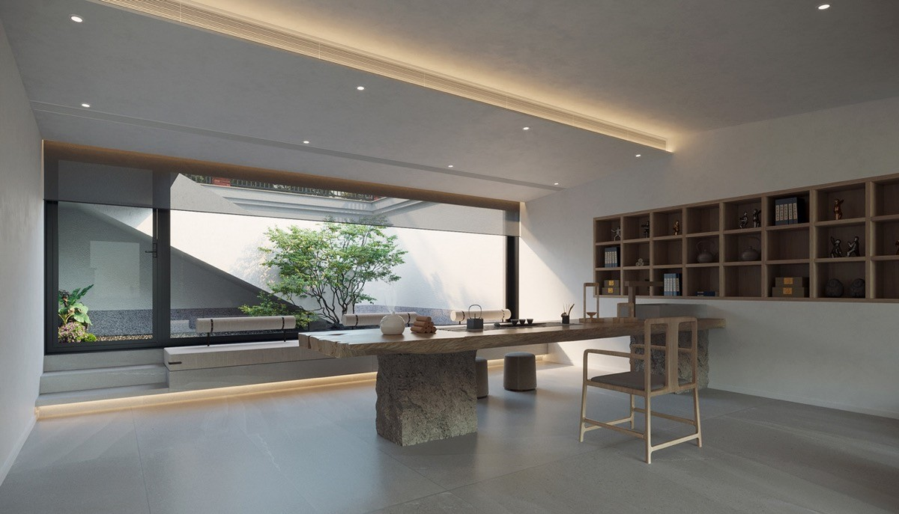
留白 in architecture
Massive window, minimal objects. The space breathes. Light from one direction.
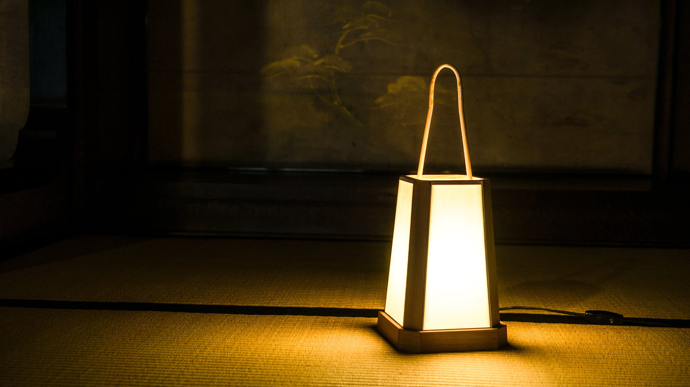
Andon lantern
Golden glow on tatami. Sharp falloff into shadow. The darkness is the atmosphere.
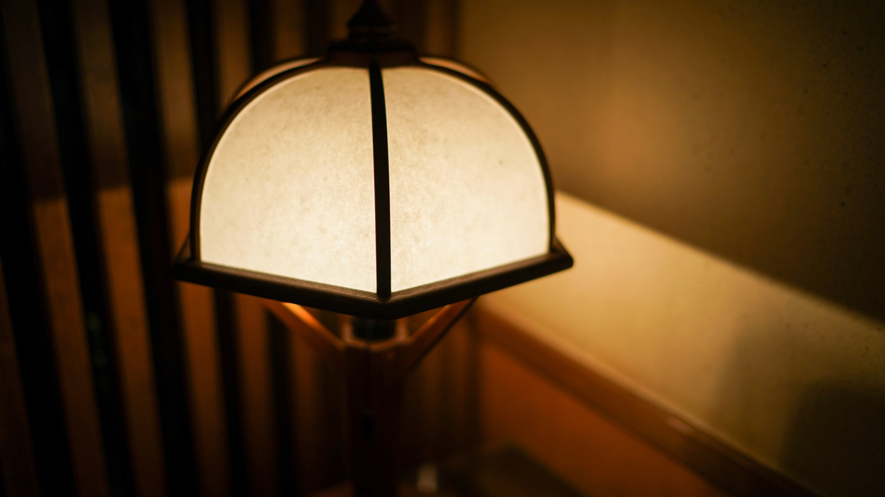
Paper shade
Warm light through washi. Texture modulates the glow. The lamp punctuates the darkness.
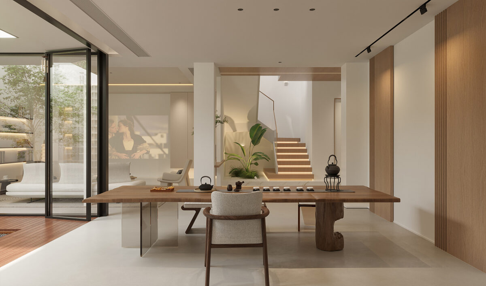
Linen, clay, wood in daylight
Natural-edge wood is the ground. Tea catches your eye — the brightest thing in a field of warm tones.
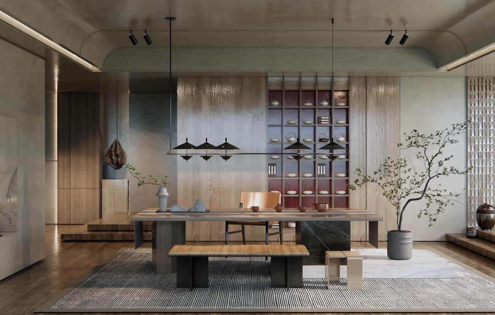
The same materials by lamplight
Materials absorb light. The wood darkens. Linen shifts from cream to gold. The material is constant — the light reveals it differently.
Tea 茶 — the saturated accent
The tea catching the light. The brightest, warmest point in every scene. In daylight it's #F8B039; by lamplight, #FAA20C — hotter against the dark. It earns its intensity by being rare.
Contrast
The Same Room at Different Hours
The two modes are not inversions of each other. Light mode is high-key —
linen and daylight. Dark mode is low-key — wood and lamplight. Amber glows
hotter against the dark.
Light — Afternoon
High-key. Papaya whip and daylight. Warm surface, rusty spice accents, honey bronze tea. The contrast is gentle — nothing stark, nothing cold.
Dark — Evening
Low-key. Mahogany and lamplight. The background absorbs; the light concentrates on what matters. Fewer things visible, each one more vivid.
The contrast sharpens — fewer things visible, each one more vivid.
Rhythm
The Arrangement Breathes
Something dense, then generous space, then a cluster of detail, then openness
again. The pace varies — sometimes expansive, sometimes pointed, never monotonous.
Design principle
Movement is slow and continuous, like the gestures of gongfu cha. The light drifts or flickers. Nothing is sudden. Nothing bounces. Nothing demands attention it hasn't earned.